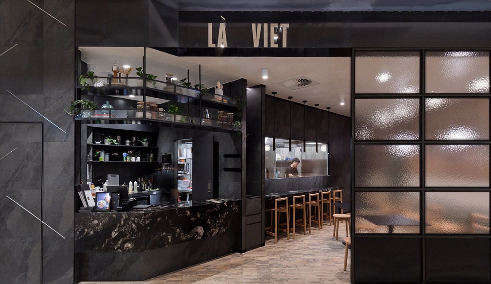

Brand
Know where the brand is going before you know where the site is. A clear three or five year direction turns site decisions into assessments instead of reactions to whatever the agent just called about.
A free 16-page guide for operators planning a second venue. What we'd want you to know before you sign.
Opening one venue and running two are different businesses.
If the second site doesn't work, it doesn't fail on its own. It takes the first one's cash down with it.
Everyone at that table gets paid whether it works or not. The agent, the shopfitter, the lawyer. You're the only one signing the lease.
The agents who didn't return your calls three years ago are calling you now. That's flattering enough to be dangerous.
None of this means don't do it. It means doing it deliberately, instead of on momentum.

It creeps. Your operations start straining, your margins thin, and you quietly absorb the difference. By the time it's obvious enough to act on, you've already paid for it.
A client of mine had four successful venues in the Sydney CBD. After seven years he opened a fifth, in a premium Westfield food hall. That venue closed after two years.
He wasn't guessing. Seven years of trading, four profitable sites, a product people already queued for, and the best address he'd ever signed for. None of that was enough.
The tenancy inside the centre was tucked away, and the foot traffic that walked past it was not the traffic his product was built for. The address looked impressive on paper and did nothing at the till. By the time that was obvious, the fitout was spent, two years of trading had gone, and the lease didn't end just because the doors did.
Status is not a strategy. Working out why a site is the right one is a cheap question to answer before you sign, and an expensive one afterwards.
Jayson Lee, Director
These are the ones we'd put to you before you commit to a site.
Know where the brand is going before you know where the site is. A clear three or five year direction turns site decisions into assessments instead of reactions to whatever the agent just called about.
Growth doesn't fix weak systems, it amplifies them. If parts of the business depend on you being physically present, a second site puts pressure on exactly those parts. Build the back end and hire your second-in-charge before you need them.
Confidence and instinct get you started. Hard numbers keep you open. Lease cost as a percentage of the revenue you're forecasting, average sale value, and a real payback period, worked out before capital is committed rather than after.
Your offer doesn't automatically travel. Every neighbourhood has its own habits and spending patterns, and a product thriving in the CBD can struggle in the suburbs. The site needs a demographic that fits what you sell, not just an address that sounds impressive.
Same brand or a fresh one. Repetition builds trust but demands consistency; a separate identity buys flexibility but doubles the work. Decide deliberately which one you're building before the signage goes up.
Four questions, no email until the end. Answer honestly. The flattering answer won't help you.
Does your first venue run profitably when you're not physically there?
Is your brand written down, or does it live in your head?
Have you scoped a real budget for site two, or is it still a guess?
When would you want the next site open?
Founder and Design Leader of INCO Studio, Jayson draws from his diverse background and years of experience in Europe, Asia and Australia. His projects stretch across multiple sectors.
Over the past 15 years, Jayson has honed his craft across Sydney and London, specialising in multi-faceted design disciplines including branding, hospitality, retail, and residential projects.
His dedication to understanding the interplay between design and human behaviour has guided his projects towards fostering meaningful connections and creating spaces where individual stories can unfold.
Collaborators
Sixteen pages, drawn from real projects, including the ones that didn't work.
Check your inbox. The playbook is on its way.
Then skip the download. If you're testing a site this week, it's faster to just talk it through.
Book a call